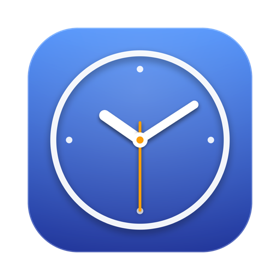
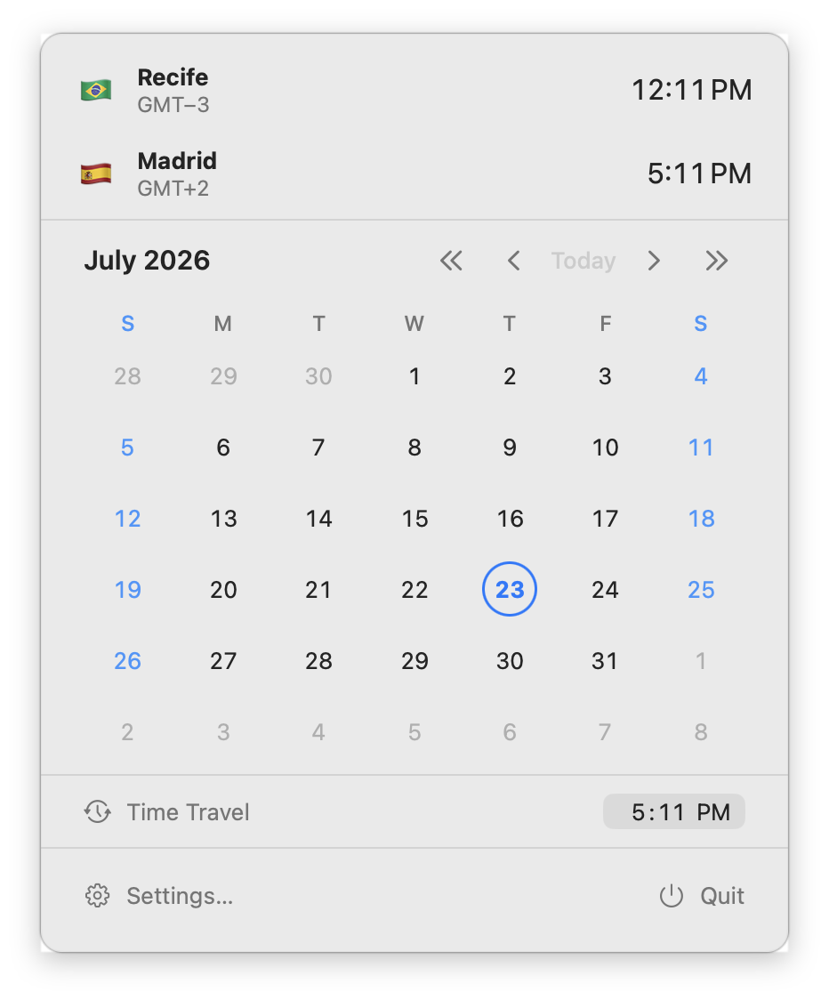
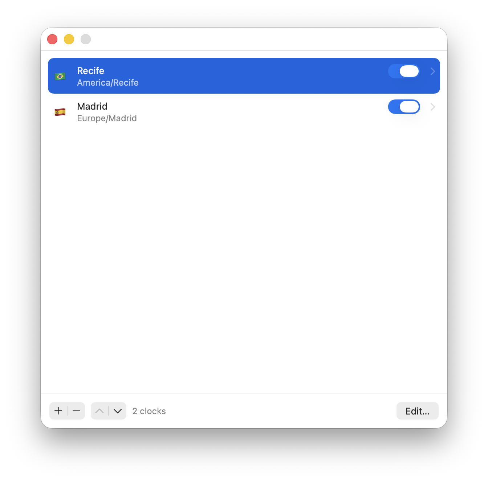

Menu bar clocks
Show each clock separately or combine them into one item. Choose time only, a leading item and time, or an analog face.

A native menu bar app for macOS
Keep colleagues, family, and travel plans one glance away, with a quick calendar and time travel built in.
Open source · Direct download · macOS 26 or later

Made for the Mac
Show each clock separately or combine them into one item. Choose time only, a leading item and time, or an analog face.
Check dates without opening a full calendar app. Weekends and the selected day stay easy to spot.
Pick a day and time to preview that exact moment across every clock. Close the panel to return to now.
Keep a clock in the menu bar only during the hours and days when it is useful, evaluated in its own time zone.
Choose a preset, enter any Unicode pattern, or assemble one visually with the Format Builder.
Updates align with real clock boundaries, so Meantime wakes only when a visible value needs to change.
Native everywhere
Toolbar panes, grouped controls, immediate menu bar feedback, and explicit Save. Add clocks from a searchable catalog, reorder or remove them, rename them, and choose a flag, emoji, text, or no leading item.

Latest stable release
For macOS 26 or later. Signed with an Apple Developer ID, notarized by Apple, and delivered in a drag-to-Applications installer.
Drag to Applications, launch, done. Meantime keeps itself up to date.
Browse all releasesOpen source
Meantime is MIT-licensed free software developed by Marton Paulo, built with SwiftUI and AppKit and bundling Sparkle for automatic updates.
No accounts, sync, or telemetry. The only network request is the update check against this repository.